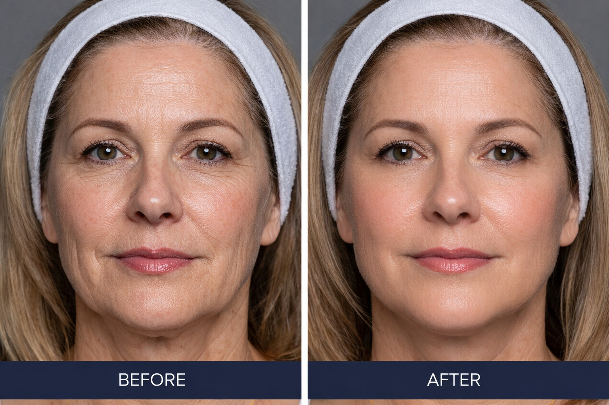
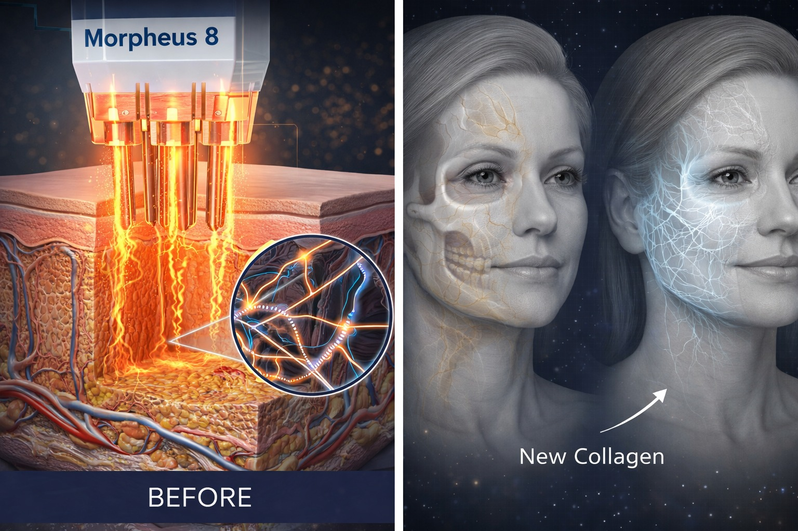

טיפול ביורג'נרטיבי מתקדם למיצוק, חידוש והמרצת העור בטכנולוגיית RF Microneedling
טיפול Morpheus 8 ברויאל-מד מבוצע כחלק מפרוטוקול טיפולי מקצועי ומובנה, המיועד לשיפור מרקם העור, מיצוק משמעותי, חידוש תהליכי קולגן טבעיים ושיפור כולל של מראה העור.

הטיפול משלב מיקרו-מחטים עם אנרגיית RF החודרת לעומק שכבות העור, ויוצרת גירוי מבוקר המעודד תהליך ביורג'נרטיבי עמוק.
Morpheus 8 היא טכנולוגיה רפואית מתקדמת המשלבת מיקרו-נידלינג עם אנרגיית רדיו-פרקוונסי, במטרה לשפר את איכות העור מבפנים ולא רק את המראה החיצוני שלו.
ברויאל-מד הטיפול אינו מבוצע כטיפול נקודתי בלבד, אלא כחלק מסדרה מקצועית שנבנית לאחר אבחון והתאמה אישית, בהתאם למצב העור, עומק הבעיה והמטרות הקליניות של המטופל/ת.
הטיפול מתאים במיוחד למצבים של רפיון עור, קמטוטים, טקסטורה לא אחידה, נקבוביות מורחבות, סימני פוסט-אקנה ושינויים באיכות העור עם השנים.

הטיפול מיועד ליצירת שיפור הדרגתי ואיכותי בעור, כולל מיצוק, חידוש, שיפור מרקם, צמצום מראה נקבוביות ושיפור כללי של מראה העור.
התוצאות נבנות לאורך הסדרה, כאשר תהליך חידוש הקולגן ממשיך גם לאחר כל טיפול.
ככל שהמטופל/ת מתמיד/ה בפרוטוקול המומלץ, כך עולה הסיכוי להשגת תוצאה עמוקה, יציבה ומשמעותית יותר.
ברויאל-מד הטיפול מבוצע בדרך כלל כחלק מסדרה מובנית הכוללת:
מספר הטיפולים, המרווחים ביניהם ואופי השילוב נקבעים לאחר אבחון ובהתאם למצב העור ולהתאמה המקצועית.
לפני תחילת טיפול Morpheus 8, יש לבצע אבחון מקצועי והתאמה אישית לפרוטוקול הנכון עבורך.
תיאום תור טלפוני ללא עלות